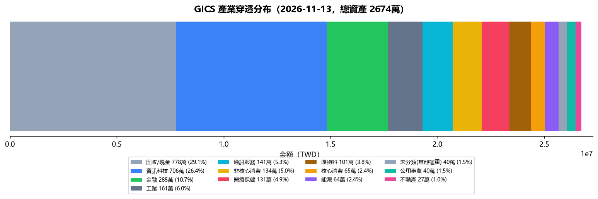

| 項目 | 內容 | 影響 |
|---|---|---|
| 總資產 | 26,738,129 TWD | 流動資產（不記錄不動產）；負債比（含不動產）51.0%｜金融資產負債比 115.8%（負債÷金融資產） |
| 總負債 | 30,955,248 TWD | 總負債合計（含房貸、保單借貸、質押） |
| 本月領息 | 114,672 TWD | 保單 11,657 + ETF 2,920 + 基金 100,095 |
| 被動月收 | 138,672 TWD | 實收：配息 114,672 + 房租 24,000｜預期：房租 80,100 + 配息保守 100,000 |
📌 口徑速記：月支出 159,210（v4 定版）｜配息 114,672（實收=常態）/ 100,000（保守）｜被動保守 180,100（配息 100,000 + 房租 80,100）
⚠️ 配息為截至今日實收，月底前依配息接力時程陸續補齊（撥回入帳後覆蓋率更高）
🟡 注意｜HOLD：不需操作，但風險需持續監控
只看四件事：今天賺賠、為什麼、風險在哪、要不要動。
| 帳面變動 | +101,368 （+0.38%）｜總資產 26,738,129 |
|---|---|
| 分項貢獻 | 台股／證券 +38,540｜基金 +9,434｜保單 +46,688｜現金 +6,706 |
| 估值日 | 台股 2026-11-13 收盤｜美股／費半 前一交易日 2026-11-12（T+1 反映於基金與保單淨值） |
基金淨值有 T+1 時差：今日顯示的美股部位漲跌，實際是前一交易日的價格。不同交易日的數字不得當成同一天的避險效果。
全面上漲。今天沒有可歸因的防守效果，漲幅來自市場本身。
對照：台股加權 43,675.12 (+1.35%)｜費半 10,506.67 (-0.54%)（前一交易日）
A｜配置＝互斥、分母總資產、總和 100%（下表各桶互不重複）；B｜風險＝多維度重疊、不可相加（GICS 產業、個股重複、幣別）。
| 今日最大拖累 | 現金 +6,706 |
|---|---|
| 美股超配 | 36.3%（目標 30%／硬上限 40%）＝目前最大單一風險 |
| 科技（雙口徑） | 14.3%（桶口徑：美股科技桶，上限 15%） ／ 26.4%（GICS 產業穿透：含台股半導體與基金間接持股） 兩者衡量不同維度且重疊，不可相加；GICS 完整度 98.5%、資料日 2026-11-13 |
| 連動與歷史實測 | 台股／證券×基金 +0.04｜基金×保單 +0.05（30 日，n=30）｜過去 9 個台股下跌日中，各桶平均變動：台股／證券 -1.47%、基金 -0.04%、保單 -0.07% 相關性只描述同向、非因果；歷史不保證未來 |
| 重複持股（跨基金） | NVIDIA 553,397（5 檔）｜APPLE 492,861（5 檔）｜MICROSOFT 393,702（5 檔）；前三檔合計 1,439,960＝5.39% 總資產（僅前十大內，實際曝險更高） |
| 持股穿透完整度 | 已穿透 81.4%／部分穿透 6.8%／未穿透 11.8% 未穿透不等於低風險；重複持股僅就已知商品合併 |
| 高股息不是防禦 | 防守型配息 17.5% 為台股高股息 ETF，實測週跌幅：00878 +2.53%（自 2026-11-09）｜0056 +2.42%（自 2026-11-09）（與台股同向，不列為防禦資產） |
| 債券與現金 | 債券 25.0%／現金 4.5%；防禦效果以壓力測試驗證（下表），不看比例本身 |
| 槓桿 | 質押維持率 199.7%（借款 5,900,000／池 11,783,508）｜距內部停止線 189% 需跌 5.52%｜距銀行通知 160% 需跌 19.89% |
| 資產分類（重新歸類） | 代表標的 | 金額 | 占比 | 防禦判定 |
|---|---|---|---|---|
| 台股成長型 | 0050／006208／主動台股 | 3,432,159 | 12.8% | 成長型，非防禦 |
| 股票收益型 | 00878／0056／00919 等高股息 | 4,668,277 | 17.5% | 不列防禦（與台股同向） |
| 海外股票型 | 美股 ETF／美股基金 | 9,710,837 | 36.3% | 成長型，非防禦 |
| 固定收益型 | 債券基金／債券 ETF | 6,689,776 | 25.0% | 需以股債同跌情境驗證 |
| 流動性防禦型 | 現金／存款 | 2,091,679 | 4.5% | 可防禦（對比 70 萬底線） |
| 分散風險型 | 黃金 | 145,402 | 0.5% | 衛星，避險強度以 0 計 |
配息率不等於報酬；債券可能因利率上升而下跌；未完成穿透的基金不得假設為低風險。
| 下跌壓力測試 | 資產損失 | 總資產 | 淨值（含房產） | 質押維持率 | 現金 |
|---|---|---|---|---|---|
| 股市 -10% | -1,781,127 | 24,957,002 | 28,018,817 | 179.7% | 2,091,679 ✅ ≥底線 |
| 股市 -20% | -3,562,255 | 23,175,874 | 26,237,689 | 159.8% ⚠️ 已觸及通知線 | 2,091,679 ✅ ≥底線 |
| 股市 -30% | -5,343,382 | 21,394,747 | 24,456,562 | 139.8% ⚠️ 已觸及追繳線 | 2,091,679 ✅ ≥底線 |
| 股債同跌（股 20%／債 5%） | -3,896,743 | 22,841,386 | 25,903,201 | —（池內股債比重未取得） | 2,091,679 ✅ ≥底線 |
| 流動性壓力（股 20%＋維持率惡化） | -3,562,255 | 23,175,874 | 26,237,689 | 159.8%（回內部停止線需還 903,793） ⚠️ 已觸及通知線 | 2,091,679 ✅ ≥底線 |
假設情境，不是預測。股票類 17,811,273（台股＋美股＋高股息，高股息不當防禦）、債券 6,689,776、現金 2,091,679； 股票全額受衝擊、債券與現金不動、借款不變、不計配息再投入；質押池以「與股市同幅」為最保守假設。
| 今日行動 | 注意｜維持 HOLD：不因單日上漲而加碼，也不因短期下跌而恐慌減碼；上列風險持續監控。 |
|---|---|
| 需要注意 |
|
| 調整觸發條件 |
|
G1／G2／G3 HOLD 未解除；本卡不產生交易授權、不自動加減碼、不解除凍結。壓力測試只供理解風險。
次要（績效，不作判斷用）：今日 帳面 +0.38% vs 台股 +1.35%（-0.97pp）｜本週 +0.80% vs 台股 +4.83%（-4.03pp）｜匯兌 -2,179（美元資產 18,363,827 × 台幣 -0.01%）
| 本月累積報酬率 | -1.07% 🟡 黃燈｜檢查損失來源 |
|---|---|
| 本月帳面損益 | -152,547 TWD （含配息與費用；與報酬率不同源） |
| 距下一級警戒 | 再跌 0.93pp 觸 🟠 全面風險審查 |
| 壓力情境（資產價格同幅下跌） | -5%：總資產 26,738,129（-4.61%）、質押 LTV 52.71%（維持率 189.7%）｜-10%：總資產 26,738,129（-9.22%）、質押 LTV 55.63%（維持率 179.7%）、回 53% 需還 279,267 |
| 當日投資風險裁示 | 觀察｜暫緩加碼，追蹤損失來源 |
口徑：TWR（時間加權、含配息與匯率）｜資料 as-of 2026-11-13（13 個估值日）。 警戒門檻：月累積 -1% 黃燈／-2% 橘燈／-3% 紅燈（相對口徑，不受資產規模影響）。 15 日滾動損益只作歷史風險校準，不代表月累積損益。影子模式（2026-11-05～2027-02-05）：只顯示燈號，不觸發交易、不改 G1/G2/G3。
| 戰略類別 | 金額 TWD | 佔比 | 目標 | 缺口 |
|---|---|---|---|---|
| TW 台股市值型 含證券、平台基金與保單穿透部位，非證券帳戶市值；不同資產類別可能涉及穿透歸類 | 3,432,159 TWD | 12.8% | 10% | +2.8pp |
| 🇺🇸 美股市值型 | 9,710,837 TWD | 36.3% | 30% | +6.3pp |
| └ 科技股 | 3,815,940 TWD | 14.3% | 15% | -0.7pp |
| └ 非科技 | 5,894,897 TWD | 22.0% | ||
| 🛡️ 防守型配息 | 4,668,277 TWD | 17.5% | 30% | -12.5pp |
| 💵 債券 | 6,689,776 TWD | 25.0% | 25% | +0.0pp |
| 💵 安全現金（桶位＝餘數法） | 1,191,679 TWD | 4.5% | 5% | -0.5pp |
配置比例依總資產計算（分母＝總資產，已含指定款、在途及衛星資產）；各桶金額依既定分類統計。
防禦維度另以「總資產－指定用途款」為分母（25,838,129 TWD，指定用途款 900,000），與本表配置比例不可互換。管理費~1.5%，偏高於配息收益率。
【台股/大盤】 加權指數：43,675.12 (+1.35%) 台積電：2,350.00 (+0.43%) 【美股/外資】 美股：道瓊 52,297.09 (-0.36%) / 納指 25,366.09 (-0.39%) / S&P 7,592.40 (-0.35%) 費半：10,506.67 (-0.54%) 【CPI/利率】 美國CPI：未取得（FRED 無回應） 【賣出訊號】 無 【買進訊號】 • 台股大漲 1.35% 【最新市場消息】 • 統一期貨：ASIC、低軌衛星點火台股，惟漲幅收斂，終場未能站回月線 (來源：tw.stock.yahoo.com) • 三大法人買超台股439.65億元 (來源：tw.stock.yahoo.com) • 【Follow法人】外資回補台股288億元...「空單卻再破10萬口」！分析師：對後市仍有疑慮 (來源：tw.stock.yahoo.com) 【持倉關聯分析】 台股持倉市值型成長 3,410,259 TWD，今日大盤上漲 1.35%，動能轉強。 【情報重點（含持倉關聯）】 ✅ 台股加權 今日 43,764.42 (+1.56%)，市場情緒看漲。（影響: ） ✅ 台積電 今日 2,365.00 (+1.07%)，市場情緒看漲。（影響: 0050） ✅ 費半 今日 10,506.67 (-0.54%)，市場情緒持平。（影響: ）
保單現值 9,364,348 TWD（安聯 A+B 7,470,379 + 第一金 M&G入息基金A(美元避險月配)F 100%（10/08 轉換已生效） 1,893,969），本月配息合計 11,657 TWD。落實利潤再投資 SOP，於 T+4 最晚轉換申請日才執行 relay 轉換。
證券總市值 2,733,570 TWD（14檔）。本月已收配息：2,920 TWD。前三大：00878 19.0%、006208 17.7%、009816 9.2%。0056 凍結質押中，短期無法加碼。
| ETF | 狀態 | 除息日 | 配息 | 發放日 |
|---|---|---|---|---|
| 0050 | ✅ 已除息 | 7/21(二) | 0.6元 | 8/10 已領 |
| 006208 | ✅ 已除息 | 7/16(四) | 4.75元 | 8/10 已領 |
| 0056 | ✅ 已除息 | 7/21(二) | 1.35元 | 8/10 已領 |
| 00984A | ✅ 已除息 | 7/16(四) | 0.415元 | 8/10 已領 |
| 00888 | ✅ 已除息 | 7/27(一) | 1.753元 | 8/20 已領 3,496（除息時 2,000 股） |
| 00983D(8月) | ✅ 已除息 | 8/17(一) | 0.06元 | 9/10 已入帳 1,190 |
| 00878 | ✅ 已除息 | 8/18(二) | 1.01元 | 9/11 已入帳 15,150 |
| 00713 | ✅ 已除息 | 9/21(一) | 1.25元 | 10/13 已入帳 2,490（預估 2,500，扣匯費 10） |
| 00981A | ✅ 已除息 | 9/16(三) | 0.63元 | 10/13 已入帳 2,510（公告 0.63/股 預估 5,040；實收約 0.315/股＝半數 → 配息率或股數待確認） |
| 00983D(9月) | ✅ 已除息 | 9/16(三) | 0.061元 | 10/14 已入帳 1,210（預估 1,220，扣匯費 10） |
| 00919 | ✅ 已除息 | 9/16(三) | 1.1元 | 10/15 已入帳 6,590（預估 6,600，扣匯費 10） |
| 00918 | ✅ 已除息 | 9/18(五) | 1.75元 | 10/15 已入帳 1,740（預估 1,750，扣匯費 10） |
| 0056(10月) | ✅ 已除息 | 10/22(四) | 1.72元 | 11/11 待入帳 |
| 00984A(10月) | ✅ 已除息 | 10/19(一) | 0.473元 | 11/13 待入帳 |
| 00888(10月) | ✅ 已除息 | 10/27(二) | 1.5元 | 11/20 待入帳 |
| 00927(10月) | ✅ 已除息 | 10/19(一) | 2.0元 | 11/13 待入帳 |
| 00983D(10月) | ✅ 已除息 | 10/19(一) | 0.061元 | 11/12 待入帳 |
| 00983D | 🔜 下一梯次 | 11/17(二) | 待公告元 | 12/10 前後 |
| 00984A | 🔜 下一梯次 | 2027/1 | 待公告元 | |
| 0056 | 🔜 下一梯次 | 2027/1 | 待公告元 | |
| 00888 | 🔜 下一梯次 | 2027/1 | 待公告元 | |
| 00878 | 🔜 下一梯次 | 11/17(二) | 待公告元 | 12/11(五) |
| 006208 | 🔜 下一梯次 | 11月中（待公告） | 待公告元 | |
| 0050 | 🔜 下一梯次 | 2027/1 | 待公告元 | |
| 00927 | 🔜 下一梯次 | 2027/1 | 待公告元 | |
| 00919 | 🔜 下一梯次 | 12月（待公告） | 待公告元 | |
| 00918 | 🔜 下一梯次 | 12月（待公告） | 待公告元 | |
| 00713 | 🔜 下一梯次 | 12月（待公告） | 待公告元 | |
| 00981A | 🔜 下一梯次 | 12月（待公告） | 待公告元 |
房租月收 80,100 TWD〔常態應收；當月已收 24,000、待收 56,100〕，覆蓋月支出 50%。當月應收 80,100 = 大義街1樓24,000+大義街23樓21,000+洲際W33,000+管理費2,100｜已收 大義街1樓24,000（24,000）｜待收 56,100可動用流動資金 1,191,679 TWD（Moneybook 真值 2,091,679 − 指定清償款 900,000），餘裕充足 ✅
指定用途款 590萬＝✅ 元大證金 96萬＋✅ 安聯-已轉 200萬＋✅ 安聯-10/1 101萬＋✅ 第一金-10/1 101萬＋⏳ W房貸預繳 20萬＋⏳ 國泰保留 70萬＋⏳ 未用罄 2萬（轉帳中者待 MB／截圖確認才入帳）
基金總市值 12,548,532 TWD ＝ 鉅亨網 713,139 ＋ 國泰基金 11,835,393（富達 5,785,662 + 聯博 983,295 + B11 5,066,436）。本月已收配息：100,095 TWD。一般申購-元大台灣卓越50ETF(0050)連結基金-台幣B配息 45,233 / 一般申購-台中銀台灣優息基金-B配息台幣 43,089 / 一般申購-安聯台灣科技基金 2,658 / 一般申購-安聯AI收益成長多重資產基金-B(月配)美元 185 / 一般申購-國泰台灣高股息基金B 6,854 / 一般申購-台新美日台半導體基金A-日圓 109,296 / 一般申購-路博邁台灣5G股票基金T月配級別(台幣) 73,370 / 一般申購-聯博-全球多元收益基金AD月配美元 2,941 / 一般申購-聯博-美國成長基金AP總報酬月配美元 2,966 / 一般申購-摩根基金-JPM多重收益美元對沖A穩定月配 2,958 / 一般申購-貝萊德世界黃金A2美元 3,281 / 一般申購-貝萊德全球股票收益A6美元穩定配息 3,118 / 一般申購-貝萊德世界科技A10美元總報酬穩定配息 3,691 / 一般申購-貝萊德世界能源A10美元總報酬穩定配息 5,367 / 一般申購-貝萊德世界健康科學A10美元總報酬穩定配息 5,305 / 一般申購-貝萊德世界黃金A10美元總報酬穩定配息 2,629 / 一般申購-貝萊德全球智慧數據股票入息A11美元強化穩定配息 3,013 / 一般申購-富達全球動能多元基金A股C月配美元 2,874 / 一般申購-安聯收益成長AMg7月收總收益美元 3,376 / 一般申購-M&G入息基金A(美元避險月配)F 3,011 / 自由Pay-元大台灣卓越50ETF(0050)連結基金-台幣A不配息 104,771 / 自由Pay-統一奔騰基金 79,255 / 自由Pay-路博邁台灣5G股票基金T累積級別(台幣) 203,898 / 國泰直購-富達全球動能多元B股C月配息美元 5,785,662 / 國泰直購-貝萊德智慧數據收益成長B11-美元-強化穩定月配息 5,066,436 / 國泰直購-聯博全球多元收益AD美元月配 983,295 / 一般申購_平台小計 325,215 / 平台小計 713,139 / 自由Pay_小計 387,924 / 鉅亨平台合計 713,139 / 國泰直購_小計 11,835,393
本月配息合計：11,657 TWD
| 站別 | 基金 | 配息時間 | T+4截止 | 狀態 |
|---|---|---|---|---|
| 第一站（月初） | 摩根JPM多重收益（安聯A+B；第一金 FJXX） | 月初（10/7、11/9、12/7、1/7） | 10/1（10月） | ✅ 正常運作 |
| 第二站（月中） | 安聯收益成長 + M&G入息 | 月中（安聯 10/14、M&G 10/16） | 10/8（安聯）、10/12（M&G） | ✅ 正常運作 |
| 第三站（月底） | 安聯AI收益 + 貝萊德世界科技A10 + PIMCO收益增長 | 月底（AI 10/28、PIMCO 10/28、A10/聯博 10/29） | 10/22（AI）、10/22（PIMCO）、10/23（A10） | ✅ 正常運作 |
| 基金 | 11月 | 12月 |
|---|---|---|
| 摩根JPM | 11/09→11/03 | 12/07→12/01 |
| 安聯收益成長 | 11/13→11/09 | 12/14→12/08 |
| M&G入息 | 11/20→11/16 | 12/18→12/14 |
| PIMCO | 11/24→11/18 | 12/29→12/23 |
| 安聯AI收益 | 11/25→11/19 | 12/29→12/23 |
| 聯博 | 11/27→11/23 | 12/30→12/24 |
| 貝萊德A10 | 11/27→11/23 | 12/30→12/24 |
除息日→T+4轉換截止。T+4 = 除息日前4工作日。
轉出 USDEQ3490 安聯收益成長AM穩定月收(美元)（現值 2,663,061 TWD，轉出 1,000,000 TWD／37.6%），分 3 批內部轉換，不新增資金、不動保單現值總額。⏳ 已核准待執行（批1 11/17；0/3 批已送）
| 批次 | 申請日 | 金額 TWD | 轉入 | T+4 入帳 | 搶息 |
|---|---|---|---|---|---|
| 批 1 | 2026-11-17 | 400,000 | PIMCO USDEQ6550 | 2026-11-23 | ✅ PIMCO 11/24 除息（官方最晚送件 11/18） |
| 批 2 | 2026-11-27 | 300,000 | M&G USDEQ5700 | 2026-12-03 | ✅ M&G 12 月除息（基準日待公告，推估 12/18–12/21）→ 12/03 已入帳 |
| 批 3 | 2026-12-04 | 300,000 | PIMCO USDEQ6550 | 2026-12-10 | ✅ PIMCO 12/29 除息（官方最晚送件 12/23） |
| 預期位移 | 金額 TWD | 桶位變化 |
|---|---|---|
| 美股曝險 | -151,000 | -0.56 pp |
| 債券曝險 | +151,000 | +0.56 pp |
搶息規則：送件日＝除息基準日前 4 個營業日（入帳當日即算參與），提前 1 營業日較安全。系統不下單，需於安聯 App 送件後回報截圖。
| 指標 | 數值 TWD | 備註 |
|---|---|---|
| 現值 | 7,470,379 | 最新 market value |
| 本月配息 | 11,657 | 當月配息 |
| 指標 | 數值 TWD | 備註 |
|---|---|---|
| 現值 | 1,893,969 | 配息前 |
| 本月配息 | 0 | 上月底配息 |
| 銀行 | 卡片 | 繳款日 | 近期應付 TWD | 狀態 |
|---|---|---|---|---|
| 玉山銀行 | Unicard / UNI | — | 1,372 | ✅ 無欠款（溢繳） |
| 台新銀行 | Richart | — | 2,990 | 🔄 待扣繳 |
| 永豐銀行 | SPORT | — | 18,485 | 🔄 待扣繳 |
| 台北富邦 | momo / J | — | 10,136 | 🔄 待扣繳 |
| 國泰世華 | CUBE | — | 18,293 | 🔄 待扣繳 |
| 銀行 | 貸款名稱 | 扣款日 | 金額 TWD | 狀態 |
|---|---|---|---|---|
| 永豐銀行 | 永豐房貸 (YY) | — | 5,712,527 | — |
| 永豐銀行 | 永豐房貸 (YYDU) | — | 4,540,812 | — |
| 永豐銀行 | 永豐房貸 (XZ) | — | 2,752,005 | — |
| 國泰世華 | 國泰房貸（大義街轉貸 2.6%） | 20日 | 12,000,000 | 9/20起月付 26,000 |
| 國泰世華 | 基金質押（質押基金池 1,178.4 萬） | 2.65% | 5,900,000 | 9/29 撥款入帳 |
📋 執行中決策追蹤
| 日期 | 決策 | 狀態 | 決策卡 |
|---|---|---|---|
| 2026-11-10 | 薪資常態：已定 48,016 暫定（11/06 升等實入），12/05 完整月複核、2027-01 轉正式 | 待複核 | — |
| 2026-11-12 | 保單轉換 方案A：安聯A 收益成長 1,000,000 → PIMCO 700,000／M&G 300,000（3 批） | 已確認 | — |
🔧 技術債（工程／治理類 · 另冊 tech_debt.json）72 筆｜P0 1／P1 8／P2 35／未分級 25｜最舊 2026-09-16（58 天）｜⚠️ 逾 45 天未結 1 筆
| 日期 | 項目 | 金額 TWD | 狀態 |
|---|---|---|---|
| 2026-11-13 | 🔄 安聯收益成長 11/13 除息（轉換截止 11/09(一) 已過） | 🔴 重要 | |
| 2026-11-16 | 🎯 00878／00983D 除息前最後買進日 | — | 📋 除息行事曆 |
| 2026-11-16 | 🔴 M&G入息 11/20 除息 T+4 截止（今最後送件） | 🔴 重要 | |
| 2026-11-17 | 💰 00878／00983D 除息日 | — | 📋 除息行事曆 |
| 2026-11-18 | 🔴 PIMCO 11/24 除息 T+4 截止（今最後送件） | 🔴 重要 | |
| 2026-11-19 | ⚠️ 006208 停止過戶（1 拆 8 分割作業期） | — | 📋 分割作業 |
| 2026-11-19 | 🔴 安聯AI收益 11/25 除息 T+4 截止（今最後送件） | 🔴 重要 | |
| 2026-11-19 | 🧭 US30Y 解凍邏輯重審（替代路線 A/B/C 取捨）：紅線連續 52 日已 stage 3，60 天進第 4 階段前必須定案（CIO 11/11 建議 1） | 📌 待追蹤 | |
| 2026-11-20 | 💰 國泰房貸繳款（大義街轉貸寬限期，金額見月固定支出） | 26,000 | 📋 每月20日 |
| 2026-11-20 | 🔄 M&G入息 11/20 除息日核對 | 📋 核對 | |
| 2026-11-17 | 🔄 保單轉換 批1 送件：安聯A 收益成長 400,000 → PIMCO（搶 11/24 除息） | ⏳ 待執行（T+4 11/23；官方最晚 11/18） | |
| 2026-11-16 | 📌 保單轉換 前置確認：安聯年度免費轉換次數／費用（條款） | ⏳ 待確認 |
🔁 配息接力時間表：💰 = 配息基準日（基準日+12天左右入帳）、🔴 = T+4 轉換截止（除息前4工作日）。三站依配息時間循環領息：第一站（10/7） → 第二站（10/14） → 第三站（10/28）。
📅 緊急應變資料：2026-11-13 13:05（台股應變分析；未觸發門檻則沿用此份；美股時段 21:30 每交易日固定更新）
【一、市場概況（台股 11/13 盤中 13:01；美市 11/12 收盤）】| 產業 | 金額 | 佔比 | 狀態 |
|---|---|---|---|
| 高科技/半導體 | 7,061,004 | 26.4 | 🟢 未達紅線 30%（當前 26.4%） |
| 金融/電信 | 4,265,358 | 16.0 | |
| 醫療/公用事業/不動產 | 1,977,668 | 7.4 | |
| 民生/工業/原物料 | 5,255,340 | 19.7 | |
| 固收與現金 | 7,777,989 | 29.1 | |
| 其他/未分類 | 400,770 | 1.5 | |
| 實物避險-黃金 | 145,402 | 0.5 | ⛔ 已結案（2026-10-30）：既有部位保留不賣；不再有後續建倉／分批指示 |
| 實物避險-石油 | 0 | 🔴 Locked（radar_state 標記，機構撤離中） | |
| 輪動閥門 | 0 |
| 產業 | 金額 | 佔比 |
|---|---|---|
| 固收/現金 | 7,777,989 | 29.1% |
| 資訊科技 | 7,061,004 | 26.4% |
| 金融 | 2,852,430 | 10.7% |
| 工業 | 1,610,560 | 6.0% |
| 通訊服務 | 1,412,928 | 5.3% |
| 非核心消費 | 1,343,933 | 5.0% |
| 醫療保健 | 1,307,151 | 4.9% |
| 原物料 | 1,013,880 | 3.8% |
| 核心消費 | 646,782 | 2.4% |
| 能源 | 640,185 | 2.4% |
| 未分類(其他權重) | 400,770 | 1.5% |
| 公用事業 | 400,462 | 1.5% |
| 不動產 | 270,055 | 1.0% |

| 產業 | 買什麼 | 金額 | 節奏 |
|---|---|---|---|
| 核心消費 | 0050(含核心消費成分:統一/大成等) | 525,000 | 分 10 批（單筆 ≤5 萬） |
| 現金保留 | 台幣活存/MMF | 0 | 守住現金底線 700,000.0；防守合併 65.8%（防守承接凍結（2026-08-21 使用者：基金也有配息應合併計算）） |
US30Y 5.43%（即時讀值｜讀值日 2026-11-12） 🟡｜VIX 16｜美元信用壓力 71.5🔴｜科技 57.5｜確定收益 57.4｜地緣 43.0｜緊急應變分 65
影響：
避險現況：黃金：161,596 / 目標 105萬（已建保單32萬，剩餘PI後）｜石油：4,958 / 目標 26萬（缺口大）｜防守：合併口徑 65.8%（≥60% 已足、承接凍結）｜現金：可動用 1,191,679（帳戶層真值 2,091,679）守底線 70萬
因應三步驟：
評估已核准寫入日報 8/9 決策核心區塊（2026-08-21）
🛡️ 防禦維度 48.8%（債券＋現金/貨幣＋低波高股息防禦＋配息型基金權益＋保單內防守型高股息權益（2026-11-03 裁決 S1）＋避險衛星（2026-10-30 結案，以 0 計入）｜抗跌/LTV保護）＝ 債券 6,689,776 + 現金 1,191,679 + 低波 1,089,462 + 配息型基金權益 3,367,500 + 避險衛星（2026-10-30 結案，不計入；黃金部位保留於原五桶）
💵 收入引擎 69.5%（全配息資產+不動產租金｜現金流覆蓋）＝ 全配息資產 + 房租 80,100/月
核心：配息≠防守，兩維度分離計算、獨立風控；避險衛星以目標值計入防禦維度（現況未建倉，目標金額由避險衛星欄位動態讀取）；配息型基金權益＝B11 依官方成分 62.58/32.65/4.77（權益部位＋內部現金，內部現金不進現金桶）；現金/貨幣停泊＝可動用台幣活存，帳戶層真值與指定用途款一律由 snapshot 數字欄位動態生成（2026-09-30 P0-1 移除手寫金額）｜【2026-10-30 裁決】避險衛星整體機制結案 → 原以『目標值 1,310,000』計入之口徑作廢，改以 0 計入；理由：黃金保單 367,192 已在五桶內計入，再加會重複計算，且已作廢的配置目標不應影響配置建議。實際部位（黃金 367,192／石油 4,958）保留不賣、仍計入總資產與穿透。分母維持既定口徑＝total_assets − 指定用途款 900,000＝26,080,153（9/29 裁決），故佔比 47.7%、較原 52.7% 降 5.0pp；若以總資產 26,738,129 為分母則為 46.11%（-6.6pp），非本系統口徑。
🎯 四大市場情境（當前：區間震盪）：多頭 防禦≥40/收入≥60/LTV≤55 ｜ 震盪 防禦≥50/收入≥65/LTV≤52 ｜ 股債雙殺 防禦≥55/收入≥70/LTV≤50 ｜ 熊市 防禦≥60/收入≥70/LTV≤48
📐 現況對照（震盪標準 防禦≥50／收入≥65）：防禦 48.8% ⚠️ 未達（抗跌／LTV 保護；配息承接判準＝合併口徑 65.8% ≥60% ✅ 已足，兩者不同問題、勿混讀） ｜ 收入 69.5% ✅｜LTV 見第八章風險紅線（動態）
🧑💻 CIO 觀點
①配置：台股12.8%偏低、現金 4.5%偏薄，乾粉宜補核心消費；科技14.3%已重，法人+119百萬續買台積電(+52百萬)但XLK最弱，不宜追高、維持不減；高股息防禦-117百萬流出，勿加碼。債券 25.0%不動。 ②最大風險：科技集中度過高疊加XLK相對弱勢，底層為AI資本支出預期反轉；另「其他-98百萬」顯示資金撤離非主流板塊，流動性斷層。 ③動作：本週乾粉優先核心消費，避開無；台股桶位分批補至15%，科技僅守不加，追蹤台積電買超延續性。| 資產分類 | 現況% | 目標% | 偏離pp | 動作 | 精算金額 | 階梯 | 觸發條件 |
|---|---|---|---|---|---|---|---|
| 台股市值型成長 | 12.8% | 10% | +2.8 | 觀察(凍結期) | 0 | 戰術觀察 | 記錄偏移，等待資金流入再處理，不主動賣出調整｜慢慢買暫緩（PI 後恢復） |
| 美股市值型成長 | 36.3% | 30% | +6.3 | 觀察(凍結期) | 0 | 中等再平衡 | 計算調整金額，納入週報指示卡｜逢彈減碼 ≤20萬/次（8/19 核准） |
| 防守型配息 | 17.5% | 30% | -12.5 | 承接凍結 | 0 | 大規模再平衡 | 優先等級拉高，下週必須處理｜合併 65.8% ≥60% 凍結 |
| 債券 | 25.0% | 25% | +0.0 | 凍結 | 0 | 觀察 | 僅寫入警示日誌，不產生交易建議｜基金經理人調整（PIMCO/M&G/00983D），不另建債梯 |
| 現金/安全網 | 4.5% | 5% | -0.5 | 觀察(凍結期) | 0 | 觀察 | 僅寫入警示日誌，不產生交易建議｜底線制：超額 491,679.0 待部署（MMF 停泊）；另指定清償款 900,000 不列可部署 |
| 產業/衛星 | 動作 | 標的 |
|---|---|---|
| 核心消費 | ✅ 乾粉優先吸納 | 0050(含核心消費成分:統一/大成等) |
| 醫療保健 | 🟡 觀察（資金中性） | 保單健康科學A2（8/24 轉換 50萬涵蓋） |
| 黃金衛星 | 🟢 順勢（COT 淨多單週增）（COT 淨多 179,548） | 00635U（PI 後分批 40/30/20，單次≤20萬） |